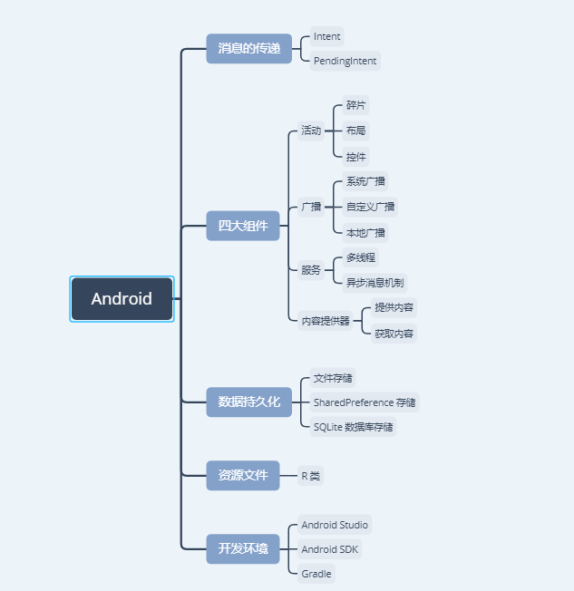

Android 小总结
1 前言
第一次接触 Android 还在刚开始学编程的时候，那会刚学了点 C 语言的基础，除此以外什么都不会。
因为一些原因，想要搞一个手机上的应用程序，然后折腾了几天 Eclipse、Android Studio、虚拟机，成功在手机上运行了 Hello World.
然后就放弃了……
因为什么都不懂，不会 Java，不会 XML，虽然运行起了 Hello World，但那是人家自带的程序。
这学期，为了赚点学分，选了移动开发这门课，讲的就是 Android 开发。
拿到教材后，看了一圈，发现，当初困扰我的很多东西现在我已经可以弄明白了。
但是呢，由于兴趣、电脑性能、时间安排等原因，结课后的一段时间内估计都不会怎么接触 Android 了，为了避免以后要用的时候又要重头学起，准备用这篇博客来总结一下学到的一些东西。
找教程的请点这里
这篇博客不是教程！这篇博客不是教程！这篇博客不是教程！
这篇博客主要是这学期学习 Android 的一个总结，主要是给我自己看的，写成博客的原因是写博客的时候，我会认真一点。
如果你是来找教程的，可以去 官网 或找找其他教程。
2 开发环境的搭建
Android 开发环境是我接触到的，最难搭建的开发环境，没有之一。
总的来说，Android 开发环境的搭建主要需要以下三个工具：
- Android Studio
- Android SDK
- Gradle
其中，Android Studio 可以直接在官网下载：
然后是 SDK，建议到 Android Studio 中文社区下载1：
最后是 Gradle，建议手动下载好对应版本的压缩包放到 C:\Users\UserName\.gradle\wrapper\dists 下，等 Android Studio 自己下载真的很绝望。
下载链接： Gradle | Releases.
这三个东西配置好了以后，如果需要配置镜像的话，可以试试东软的：
其他和开发环境的搭建相关的问题就不多说了，因人而异，相同的步骤在不同的电脑上可能遇到不同的问题，多谷歌或百度，总能解决的。
3 日志工具
Android 的日志工具使用起来是真的省心，不需要自己去配置什么，默认的格式基本就足够了。
唯一比较纠结的是常用的一个参数： TAG.
常见的做法是在类开头的第一个字段定义它：
public class MyActivity extends Activity { private static final String TAG = "MyActivity"; //... public void method () { //... Log.d(TAG, "Some logging"); } }
然而，这样的方式依然有些让人不爽，存在硬编码，手写字符串也很不方便。
Stack Overflow 有人提出了相关的问题，接受的解决方案是这样的：
private static final String TAG = MyActivity.class.getName();
还有一个问题就是日志工具的定制，如果开发和生产环境中需要不同级别的日志打印，可以通过定制日志工具实现2：
public class LogUtil { public static final int VERBOSE = 1; public static final int DEBUG = 2; public static final int INFO = 3; public static final int WARN = 4; public static final int ERROR = 5; public static final int NOTHING = 6; public static int level = VERBOSE; public static void v(String tag, String msg) { if (level <= VERBOSE) { log.v(tag, msg); } } public static void d(String tag, String msg) { if (level <= DEBUG) { log.d(tag, msg); } } public static void i(String tag, String msg) { if (level <= INFO) { log.i(tag, msg); } } public static void w(String tag, String msg) { if (level <= WARN) { log.w(tag, msg); } } public static void e(String tag, String msg) { if (level <= ERROR) { log.e(tag, msg); } } }
只需要指定 level 来确定需要打印那些级别的日志就可以了。
4 活动
活动属于 Android 四大组件之一，相关的内容也很多，想要学习它们的使用可以看官方教程：
- Activity | Android Developers
- Intent 和 Intent 过滤器 | Android Developers
- 碎片 | Android Developers
- UI 概览 | Android Developers
- …
学习过程中的疑问与解答：
布局文件中控件的 ID 需要保证它的全局唯一性吗？
不需要，只要保证其局部唯一就可以了，即：保证使用
findViewById的地方，内部控件的 ID 是唯一的。对于
Activity来说，它的findViewById是在整个布局文件内部寻找，因此，单个文件内部还是保证唯一比较好。活动与布局之间的关系？
活动作为应用程序的门面，通过方法
setContentView加载指定的布局，内部通过 反射 机制，动态创建布局文件中定义的各种控件与布局，然后按照布局文件中定义的层次结构与属性装填好显示。碎片与活动的兼容问题？
老版本的 Android Studio 似乎存在的一个问题，活动默认继承自
android.app.Activity, 而碎片默认继承自android.support.v4.app.Fragment, 这两者是不兼容的，程序一运行就 GG.解决方案是：要么用
android.app.Fragment和android.app.Activity, 要么用android.support.v7.app.AppCompatActivity和android.support.v4.app.Fragment.R 类是怎么一回事？
很明显，我们没有自己创建 R 类，这就意味着 Android Studio 会自主编译 R 类，推测是在资源文件发生修改后进行编译。
如果你的资源文件出错，编译失败，你的代码中的 R 也许就变红了。
布局的动态加载
Android 可以动态的加载布局，当移动端的大小不同或横竖屏不一样是，可以自动选择相应的布局（如果有的话），所以说，加载了什么布局，方法
findViewById就作用在什么布局上，因此编写代码是需要注意存在多种不同的布局的情况。相对布局的一个关键点
名字都叫做相对布局了，那么，对于相对布局来说，十分重要的一点就是：参考对象的选择。
Intent 传递对象
Intent 可以传递实现了 Serializable 和 Parcelable 的对象。
5 广播、服务和内容提供器
Android 的四大组件为：活动、广播、服务和内容提供器，除了活动以外，另外三大组件都只是简单的学习了一下，用的还不多，就简单的一并总结了 @_@
这是官方的教程链接：
简单的总结：
广播：广播主要分为系统广播、自定义广播和本地广播，广播的接收和发送操作都是比较简单的。
其中，系统广播和自定义广播可以在
AndroidManifest.xml静态注册，而本地广播只能动态注册。
服务：服务是 Android 运行后台任务的方式，与之相关的话题有 多线程 和 异步消息机制. 而服务本身的使用反而比较简单，需要注意的一点是：子线程中是不能修改 UI 内容的，如果要修改，就只能想办法告诉主线程执行相应的操作。
一种比较简单的方式是使用 Activity.runOnUiThread 方法。
- 内容提供器：内容提供器通过类似数据库访问的接口提供访问与获取内容的方法，与之相关的一个话题是
URI的解析与处理。
6 数据持久化
Android 可以将数据存储到文件、SharedPreferences 和 SQLite 数据库中，并提供了相应的，简洁的接口。
官方的教程链接：
文件和 SharedPreferences 的使用都很简单，而 Android 也内置了 SQLite 数据库，算是比较简单的一部分内容。
7 权限问题
编写 Android 问题避不开的一个问题就是权限的获取，对于危险的权限来说，除了需要在 AndroidManifest.xml 中声明以外，还需要进行运行时权限申请。
运行时权限申请的官方教程：
运行时权限的申请不是什么困难的操作，比较让人在意的是申请权限是的 requestCode, 活动的 startActivityForResult() 也有这么一个参数。
直接填一个整数不是很方便管理，估计过一段时间就忘了每个整数的含义。
自己定义请求码也很麻烦，为什么 Google 不内置一个各个权限对应的请求码呢（很明显，活动没法内置）？
8 后记
Android 的内容是很多的，单靠一篇博客就想写完是不可能的，这里也只是拎了一些印象比较深的的内容出来总结。
像多媒体的使用、网络访问、XML、JSON 等内容都没有提及，毕竟，用的少，没啥实感。
博客中附了不少官方教程的链接，建议去看看，官方教程写的很全面，我的不少疑问都是通过官方教程解决的。
